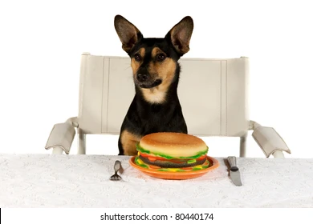

|  | SUŅI! |
| Suņi ir ļoti dažādi, katram saimniekam ir sava šķirne, vai pat to maisījums. Suņi ir miksēti ar citām šķirnēm ļoti daudzus gadus, tāpēc suņu ir ļoti daudz. Katrai šķirnei, vai to maisījumam, ir daudz atšķirību. Kādam sunim ir vairāk rotaļgribas, kāds vienkārši mājās grib sēdēt, toties pat starp suņu šķirnēm ir atšķirību starp uzvedībām, kas iespējams atkarīgs no saimnieka un kā viņš audzinājis savu suni. |
| Suņu mīlestība pret saimnieku ir nepārspējama, tas noteikti ir cilvēka labākais palīgs. Alus cilvēki tos izmantoja medībām. Toties šobrīd tos izmanto mīlestībai pret saimnieku, pastāv pat tādi "terapijas suņi", kas palīdz cilvēkam ar stresu. Aklie cilvēki arī tos izmanto kā pavadoņus, lai palīdzētu saprast apkārtni. Suņi dara visu ko spēj, lai palīdzētu saimniekam. |
| Shiba inu ir mana personīgi mīļākā suņu šķirne. Tā ir tā perfekti līdzsvarotākā suņu šķirne, ko iespējams atrast. Suns ir aktīvs, bet ne pārāk. Tas ir ļoti mīlīgs, pat kad ir pieaudzis. Tas ir ļoti paklausīgs un gudrs. Toties latvijā šos suņus ir grūti iegādāties, bet es tos noteikti esmu redzējis, pat šeit. Ja es iegādātos suni, tad tā būtu Shiba inu. |
| Visinteresantākā lieta ko apsvērt iegādājoties suņus, vai pat kaķus, ir tas, ka tie visu laiku zog ēdienu. Skatās ar savām actiņām, lien šķīvjos, vainu pat ar savu dzīvību aizsargā šo ēdienu no visiem kas nav saimnieks. Suņi ēd ļoti daudz, to apetītes ir neaprakstāmas, tāpēc nepabarojot kārtīgi suni, viņš tev var atņemt tavu ēdienu. |